← Back to projects
Interactive / VR
"Reality" Elderly Interaction Hub
A VR exercise experience using real-time pose detection for elderly participants.

Project overview
This project is a real life event, the game called "Reality Elderly Interaction Hub" which is a VR game with openpose to detect physical pose in real time. The game is designed to help elderly to do exercise and have fun at the same time.
A closer look
Project gallery.
Explore screenshots, footage and project details.
Play video / demo / 01
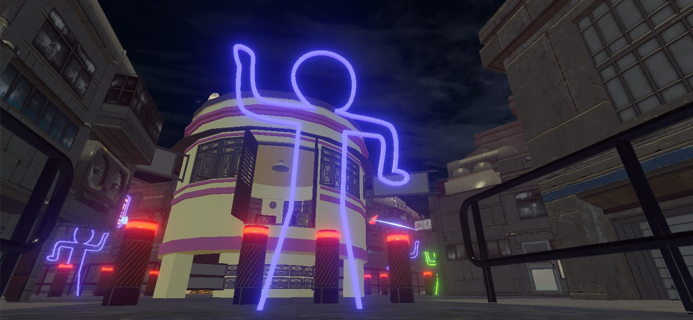
View image / 02
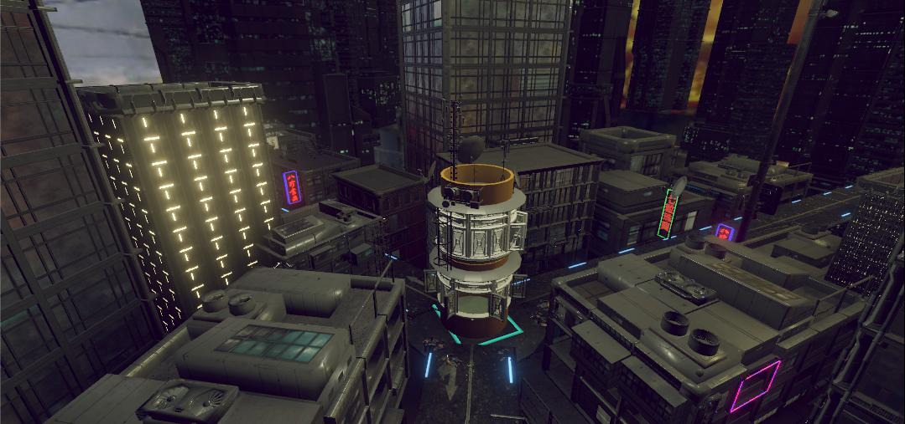
View image / 03
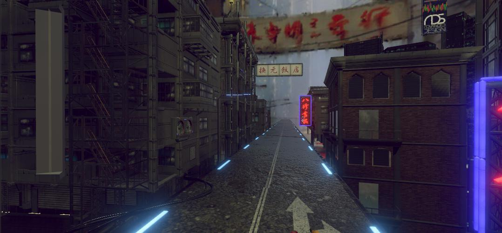
View image / 04
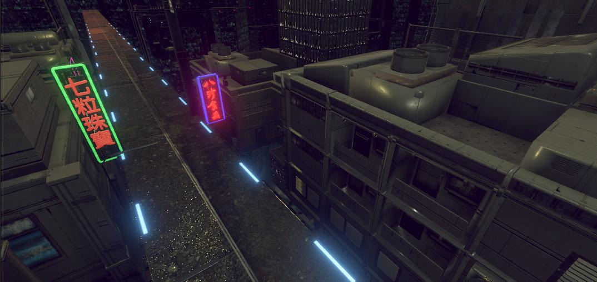
View image / 05View image / 06

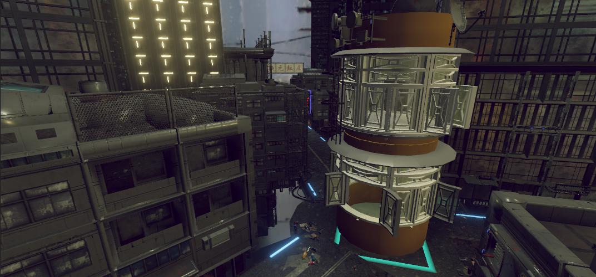
View image / 07
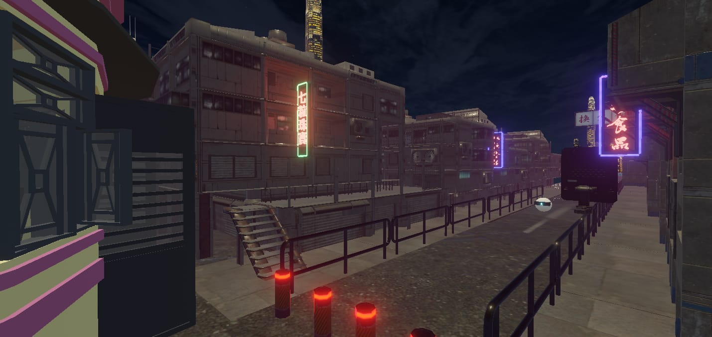
View image / 08
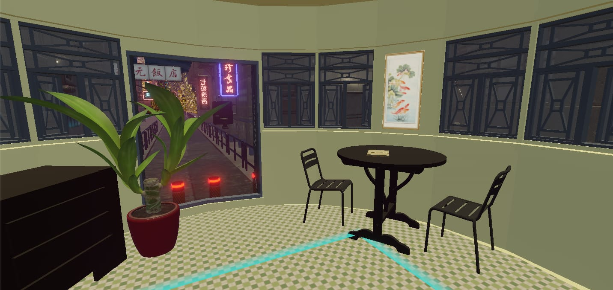
View image / 09
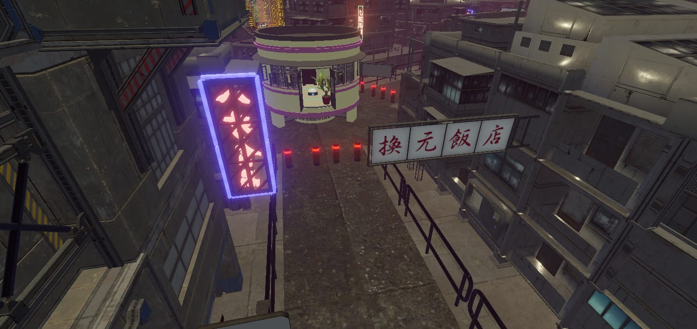
View image / 10
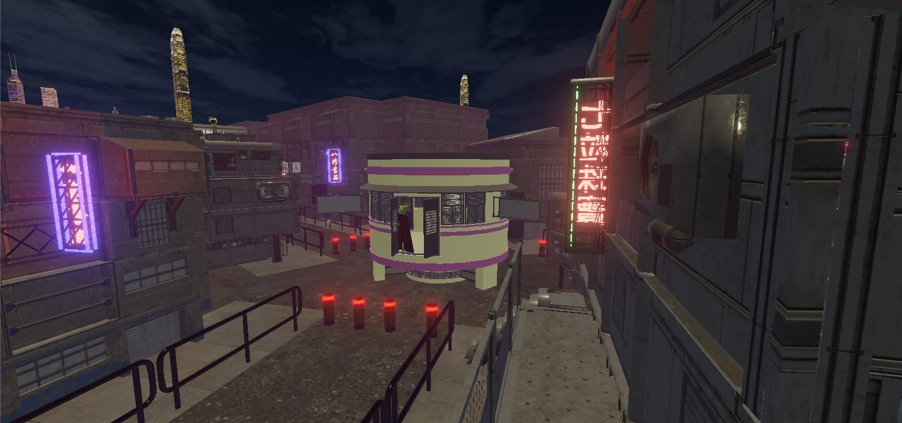
View image / 11
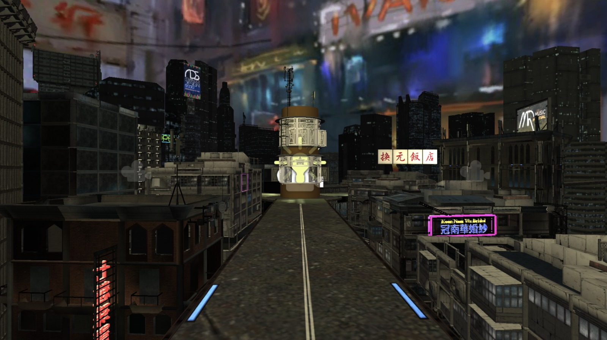
View image / 12
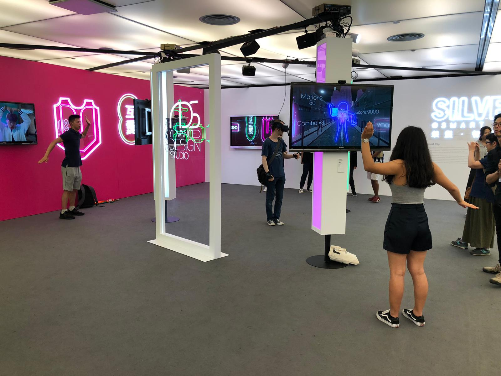
View image / 13
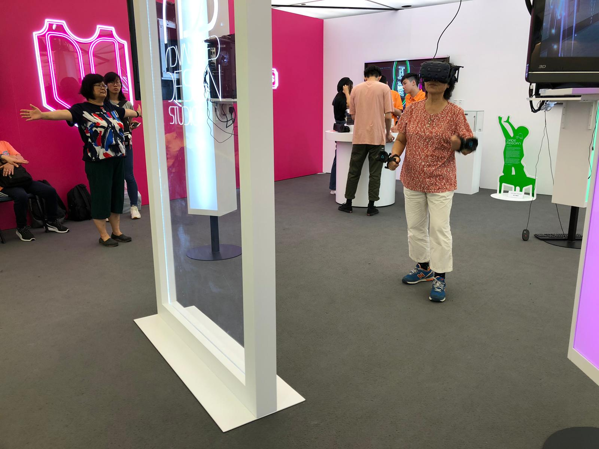
View image / 14
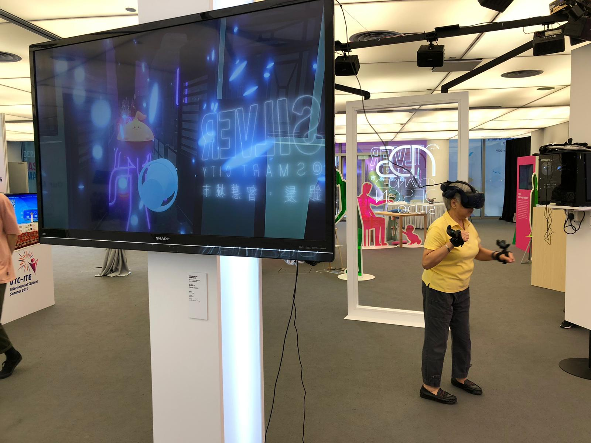
View image / 15